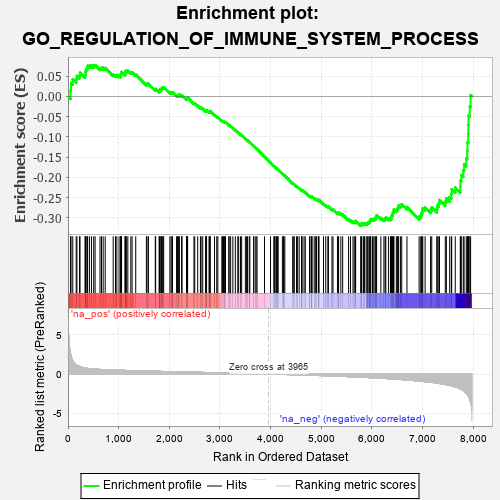
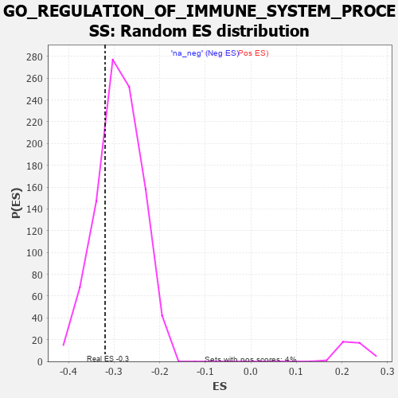

| | | Dataset | 7d |
| Phenotype | NoPhenotypeAvailable |
| Upregulated in class | na_neg |
| GeneSet | GO_REGULATION_OF_IMMUNE_SYSTEM_PROCESS |
| Enrichment Score (ES) | -0.31994918 |
| Normalized Enrichment Score (NES) | -1.1063199 |
| Nominal p-value | 0.24608968 |
| FDR q-value | 0.73812425 |
| FWER p-Value | 1.0 |
Table: GSEA Results Summary

Fig 1: Enrichment plot: GO_REGULATION_OF_IMMUNE_SYSTEM_PROCESS
Profile of the Running ES Score & Positions of GeneSet Members on the Rank Ordered List
| PROBE | GENE SYMBOL | GENE_TITLE | RANK IN GENE LIST | RANK METRIC SCORE | RUNNING ES | CORE ENRICHMENT | | 1 | TGFB3 | | | 49 | 2.654 | 0.0149 | No |
| 2 | RAC2 | | | 60 | 2.442 | 0.0331 | No |
| 3 | UBE2K | | | 94 | 1.739 | 0.0427 | No |
| 4 | SPI1 | | | 162 | 1.182 | 0.0435 | No |
| 5 | FOXF1 | | | 176 | 1.136 | 0.0509 | No |
| 6 | RHOH | | | 228 | 0.987 | 0.0521 | No |
| 7 | DCST1 | | | 237 | 0.959 | 0.0588 | No |
| 8 | DLL1 | | | 337 | 0.760 | 0.0520 | No |
| 9 | DAPK2 | | | 343 | 0.754 | 0.0574 | No |
| 10 | CNOT7 | | | 348 | 0.750 | 0.0629 | No |
| 11 | ARNT | | | 357 | 0.741 | 0.0678 | No |
| 12 | SOX13 | | | 380 | 0.717 | 0.0707 | No |
| 13 | BAX | | | 387 | 0.711 | 0.0756 | No |
| 14 | MLH1 | | | 423 | 0.679 | 0.0765 | No |
| 15 | LEO1 | | | 463 | 0.655 | 0.0766 | No |
| 16 | THOC1 | | | 507 | 0.627 | 0.0761 | No |
| 17 | PKN1 | | | 535 | 0.619 | 0.0776 | No |
| 18 | GLMN | | | 632 | 0.583 | 0.0698 | No |
| 19 | HES5 | | | 661 | 0.571 | 0.0708 | No |
| 20 | XRCC6 | | | 694 | 0.560 | 0.0711 | No |
| 21 | WDR61 | | | 734 | 0.549 | 0.0704 | No |
| 22 | HMGB2 | | | 892 | 0.507 | 0.0542 | No |
| 23 | MATR3 | | | 937 | 0.498 | 0.0525 | No |
| 24 | CTR9 | | | 964 | 0.492 | 0.0531 | No |
| 25 | HMGB4 | | | 1008 | 0.482 | 0.0514 | No |
| 26 | AKT1 | | | 1040 | 0.476 | 0.0512 | No |
| 27 | YAP1 | | | 1041 | 0.475 | 0.0550 | No |
| 28 | MEF2C | | | 1054 | 0.473 | 0.0572 | No |
| 29 | RBM15 | | | 1057 | 0.473 | 0.0607 | No |
| 30 | SRC | | | 1128 | 0.459 | 0.0553 | No |
| 31 | KMT2A | | | 1130 | 0.458 | 0.0589 | No |
| 32 | NCK2 | | | 1131 | 0.458 | 0.0625 | No |
| 33 | PSMD7 | | | 1152 | 0.454 | 0.0635 | No |
| 34 | PSMD2 | | | 1181 | 0.450 | 0.0635 | No |
| 35 | KAT7 | | | 1240 | 0.440 | 0.0595 | No |
| 36 | CDC73 | | | 1265 | 0.436 | 0.0599 | No |
| 37 | NKAP | | | 1337 | 0.422 | 0.0541 | No |
| 38 | SOS1 | | | 1547 | 0.384 | 0.0302 | No |
| 39 | SOCS6 | | | 1560 | 0.381 | 0.0317 | No |
| 40 | PAF1 | | | 1588 | 0.376 | 0.0312 | No |
| 41 | MEIS1 | | | 1723 | 0.351 | 0.0167 | No |
| 42 | KMT2E | | | 1730 | 0.350 | 0.0187 | No |
| 43 | FNIP1 | | | 1798 | 0.338 | 0.0128 | No |
| 44 | PSMD4 | | | 1811 | 0.335 | 0.0139 | No |
| 45 | ABR | | | 1812 | 0.335 | 0.0166 | No |
| 46 | MSH2 | | | 1819 | 0.334 | 0.0185 | No |
| 47 | TCF7 | | | 1848 | 0.328 | 0.0175 | No |
| 48 | TRIM5 | | | 1852 | 0.327 | 0.0197 | No |
| 49 | PSMD6 | | | 1858 | 0.326 | 0.0216 | No |
| 50 | RBBP5 | | | 1875 | 0.323 | 0.0222 | No |
| 51 | PAK3 | | | 1889 | 0.322 | 0.0231 | No |
| 52 | RAF1 | | | 2011 | 0.303 | 0.0098 | No |
| 53 | HMCES | | | 2036 | 0.300 | 0.0091 | No |
| 54 | IRF4 | | | 2054 | 0.298 | 0.0093 | No |
| 55 | MEIS2 | | | 2063 | 0.296 | 0.0107 | No |
| 56 | PSME4 | | | 2143 | 0.285 | 0.0027 | No |
| 57 | CNOT4 | | | 2161 | 0.283 | 0.0028 | No |
| 58 | SYK | | | 2186 | 0.278 | 0.0019 | No |
| 59 | C1QBP | | | 2189 | 0.278 | 0.0039 | No |
| 60 | ATAD5 | | | 2197 | 0.277 | 0.0052 | No |
| 61 | CREB1 | | | 2243 | 0.269 | 0.0015 | No |
| 62 | PSMF1 | | | 2251 | 0.268 | 0.0028 | No |
| 63 | ANO6 | | | 2339 | 0.255 | -0.0064 | No |
| 64 | DOCK8 | | | 2341 | 0.254 | -0.0045 | No |
| 65 | MIF | | | 2357 | 0.252 | -0.0045 | No |
| 66 | SIN3A | | | 2361 | 0.251 | -0.0028 | No |
| 67 | ZC3H8 | | | 2486 | 0.229 | -0.0170 | No |
| 68 | KAT2B | | | 2502 | 0.226 | -0.0172 | No |
| 69 | PSMD5 | | | 2560 | 0.218 | -0.0228 | No |
| 70 | VAV3 | | | 2614 | 0.210 | -0.0279 | No |
| 71 | PUM2 | | | 2627 | 0.209 | -0.0278 | No |
| 72 | MITF | | | 2659 | 0.205 | -0.0302 | No |
| 73 | DDX1 | | | 2718 | 0.196 | -0.0361 | No |
| 74 | SLIT2 | | | 2724 | 0.195 | -0.0352 | No |
| 75 | RORA | | | 2730 | 0.193 | -0.0343 | No |
| 76 | CUL1 | | | 2735 | 0.193 | -0.0333 | No |
| 77 | NSD2 | | | 2784 | 0.185 | -0.0380 | No |
| 78 | AQP3 | | | 2796 | 0.184 | -0.0380 | No |
| 79 | FER | | | 2803 | 0.183 | -0.0373 | No |
| 80 | BRK1 | | | 2805 | 0.183 | -0.0359 | No |
| 81 | WDR5 | | | 2892 | 0.168 | -0.0457 | No |
| 82 | CPN2 | | | 2936 | 0.160 | -0.0500 | No |
| 83 | BTK | | | 2958 | 0.156 | -0.0515 | No |
| 84 | LEF1 | | | 3037 | 0.144 | -0.0604 | No |
| 85 | ABCE1 | | | 3051 | 0.143 | -0.0609 | No |
| 86 | PROS1 | | | 3070 | 0.141 | -0.0621 | No |
| 87 | HDAC1 | | | 3086 | 0.138 | -0.0629 | No |
| 88 | CUL4A | | | 3097 | 0.137 | -0.0631 | No |
| 89 | GPX1 | | | 3109 | 0.135 | -0.0635 | No |
| 90 | AHR | | | 3175 | 0.126 | -0.0709 | No |
| 91 | PSMD9 | | | 3179 | 0.125 | -0.0703 | No |
| 92 | AP1G1 | | | 3210 | 0.121 | -0.0732 | No |
| 93 | PUS7 | | | 3254 | 0.113 | -0.0778 | No |
| 94 | SMAD3 | | | 3303 | 0.105 | -0.0832 | No |
| 95 | TAB1 | | | 3351 | 0.097 | -0.0885 | No |
| 96 | SMAD7 | | | 3369 | 0.093 | -0.0899 | No |
| 97 | MED1 | | | 3405 | 0.089 | -0.0937 | No |
| 98 | TRIL | | | 3428 | 0.087 | -0.0959 | No |
| 99 | FES | | | 3501 | 0.077 | -0.1046 | No |
| 100 | PQBP1 | | | 3526 | 0.072 | -0.1071 | No |
| 101 | KMT2C | | | 3544 | 0.069 | -0.1087 | No |
| 102 | GPR18 | | | 3578 | 0.063 | -0.1125 | No |
| 103 | MAPK3 | | | 3589 | 0.062 | -0.1133 | No |
| 104 | SKP1 | | | 3663 | 0.049 | -0.1223 | No |
| 105 | DHX9 | | | 3693 | 0.044 | -0.1257 | No |
| 106 | NF1 | | | 3713 | 0.040 | -0.1278 | No |
| 107 | SYT11 | | | 3732 | 0.036 | -0.1299 | No |
| 108 | DGKZ | | | 3879 | 0.015 | -0.1486 | No |
| 109 | DDX58 | | | 3998 | -0.007 | -0.1638 | No |
| 110 | TAL1 | | | 4064 | -0.018 | -0.1720 | No |
| 111 | CSF1 | | | 4074 | -0.019 | -0.1730 | No |
| 112 | PDE4B | | | 4089 | -0.022 | -0.1747 | No |
| 113 | MTOR | | | 4114 | -0.025 | -0.1776 | No |
| 114 | ABL1 | | | 4125 | -0.027 | -0.1787 | No |
| 115 | CRK | | | 4139 | -0.031 | -0.1801 | No |
| 116 | STX7 | | | 4147 | -0.033 | -0.1807 | No |
| 117 | ARPC2 | | | 4232 | -0.047 | -0.1912 | No |
| 118 | PAX5 | | | 4255 | -0.051 | -0.1936 | No |
| 119 | PCID2 | | | 4258 | -0.051 | -0.1935 | No |
| 120 | PSME3 | | | 4280 | -0.056 | -0.1958 | No |
| 121 | SPG21 | | | 4436 | -0.083 | -0.2151 | No |
| 122 | CDC37 | | | 4446 | -0.084 | -0.2156 | No |
| 123 | LRRK2 | | | 4467 | -0.087 | -0.2175 | No |
| 124 | ICAM5 | | | 4511 | -0.096 | -0.2223 | No |
| 125 | PLPP4 | | | 4533 | -0.101 | -0.2242 | No |
| 126 | BAG6 | | | 4563 | -0.108 | -0.2270 | No |
| 127 | ADTRP | | | 4612 | -0.120 | -0.2323 | No |
| 128 | GATA3 | | | 4614 | -0.120 | -0.2315 | No |
| 129 | DLG5 | | | 4619 | -0.121 | -0.2310 | No |
| 130 | ARPC3 | | | 4659 | -0.129 | -0.2350 | No |
| 131 | LIMK1 | | | 4684 | -0.136 | -0.2370 | No |
| 132 | PLCG1 | | | 4770 | -0.151 | -0.2468 | No |
| 133 | PIM1 | | | 4776 | -0.152 | -0.2462 | No |
| 134 | PLCL2 | | | 4807 | -0.159 | -0.2488 | No |
| 135 | P2RX4 | | | 4813 | -0.161 | -0.2482 | No |
| 136 | FBXW7 | | | 4816 | -0.161 | -0.2472 | No |
| 137 | DLG1 | | | 4860 | -0.169 | -0.2514 | No |
| 138 | CLU | | | 4889 | -0.174 | -0.2536 | No |
| 139 | VAMP8 | | | 4905 | -0.179 | -0.2541 | No |
| 140 | EP300 | | | 4941 | -0.186 | -0.2571 | No |
| 141 | XRCC5 | | | 4946 | -0.187 | -0.2562 | No |
| 142 | PRKDC | | | 4955 | -0.189 | -0.2557 | No |
| 143 | PDPK1 | | | 5043 | -0.207 | -0.2653 | No |
| 144 | DRD2 | | | 5088 | -0.221 | -0.2692 | No |
| 145 | STK10 | | | 5130 | -0.233 | -0.2726 | No |
| 146 | FLCN | | | 5140 | -0.235 | -0.2719 | No |
| 147 | ATM | | | 5210 | -0.249 | -0.2788 | No |
| 148 | DDX21 | | | 5231 | -0.252 | -0.2794 | No |
| 149 | CD9 | | | 5319 | -0.277 | -0.2884 | No |
| 150 | TOB2 | | | 5337 | -0.282 | -0.2883 | No |
| 151 | ELMO2 | | | 5341 | -0.283 | -0.2865 | No |
| 152 | FZD5 | | | 5386 | -0.292 | -0.2898 | No |
| 153 | PPM1B | | | 5422 | -0.300 | -0.2920 | No |
| 154 | PCBP2 | | | 5539 | -0.331 | -0.3043 | No |
| 155 | SPHK1 | | | 5576 | -0.339 | -0.3062 | No |
| 156 | ROR2 | | | 5626 | -0.353 | -0.3097 | No |
| 157 | WNK1 | | | 5650 | -0.362 | -0.3098 | No |
| 158 | PSMD1 | | | 5674 | -0.367 | -0.3099 | No |
| 159 | CASP8 | | | 5678 | -0.369 | -0.3073 | No |
| 160 | VAMP7 | | | 5777 | -0.399 | -0.3168 | Yes |
| 161 | LAMP1 | | | 5796 | -0.404 | -0.3159 | Yes |
| 162 | ADA | | | 5798 | -0.405 | -0.3128 | Yes |
| 163 | SNX4 | | | 5834 | -0.415 | -0.3140 | Yes |
| 164 | TKFC | | | 5854 | -0.419 | -0.3131 | Yes |
| 165 | ARPC4 | | | 5886 | -0.430 | -0.3136 | Yes |
| 166 | DOCK1 | | | 5908 | -0.438 | -0.3129 | Yes |
| 167 | STK11 | | | 5922 | -0.443 | -0.3110 | Yes |
| 168 | LDB1 | | | 5944 | -0.451 | -0.3101 | Yes |
| 169 | PRDM1 | | | 5956 | -0.457 | -0.3079 | Yes |
| 170 | TTBK1 | | | 5969 | -0.460 | -0.3058 | Yes |
| 171 | GABPA | | | 5977 | -0.464 | -0.3030 | Yes |
| 172 | XBP1 | | | 6011 | -0.475 | -0.3034 | Yes |
| 173 | RAC1 | | | 6036 | -0.484 | -0.3027 | Yes |
| 174 | JAG1 | | | 6060 | -0.494 | -0.3017 | Yes |
| 175 | CALR | | | 6077 | -0.499 | -0.2998 | Yes |
| 176 | FBN1 | | | 6080 | -0.499 | -0.2961 | Yes |
| 177 | FLOT2 | | | 6092 | -0.504 | -0.2935 | Yes |
| 178 | RAG1 | | | 6176 | -0.530 | -0.2999 | Yes |
| 179 | CDC42 | | | 6236 | -0.548 | -0.3032 | Yes |
| 180 | AP3D1 | | | 6261 | -0.558 | -0.3018 | Yes |
| 181 | STK39 | | | 6274 | -0.563 | -0.2989 | Yes |
| 182 | ELF1 | | | 6328 | -0.587 | -0.3010 | Yes |
| 183 | BIRC3 | | | 6366 | -0.603 | -0.3010 | Yes |
| 184 | ISG15 | | | 6385 | -0.608 | -0.2985 | Yes |
| 185 | TRPM4 | | | 6390 | -0.612 | -0.2941 | Yes |
| 186 | UBE2N | | | 6407 | -0.621 | -0.2912 | Yes |
| 187 | MBL2 | | | 6411 | -0.623 | -0.2866 | Yes |
| 188 | CSK | | | 6428 | -0.630 | -0.2837 | Yes |
| 189 | MALT1 | | | 6432 | -0.634 | -0.2790 | Yes |
| 190 | DYSF | | | 6481 | -0.654 | -0.2800 | Yes |
| 191 | DPP4 | | | 6501 | -0.663 | -0.2771 | Yes |
| 192 | TRPV4 | | | 6515 | -0.668 | -0.2735 | Yes |
| 193 | ACE | | | 6526 | -0.674 | -0.2694 | Yes |
| 194 | OTOP1 | | | 6562 | -0.690 | -0.2684 | Yes |
| 195 | RNF41 | | | 6588 | -0.703 | -0.2660 | Yes |
| 196 | PAK1 | | | 6691 | -0.757 | -0.2732 | Yes |
| 197 | LRP8 | | | 6931 | -0.889 | -0.2969 | Yes |
| 198 | DNM1L | | | 6963 | -0.913 | -0.2936 | Yes |
| 199 | DPY30 | | | 6976 | -0.923 | -0.2878 | Yes |
| 200 | NPDC1 | | | 6993 | -0.932 | -0.2824 | Yes |
| 201 | CCR2 | | | 7003 | -0.939 | -0.2761 | Yes |
| 202 | PIBF1 | | | 7049 | -0.966 | -0.2742 | Yes |
| 203 | UFD1 | | | 7157 | -1.040 | -0.2797 | Yes |
| 204 | PTPRJ | | | 7180 | -1.054 | -0.2741 | Yes |
| 205 | CIB1 | | | 7280 | -1.152 | -0.2777 | Yes |
| 206 | PARP3 | | | 7289 | -1.158 | -0.2695 | Yes |
| 207 | GRN | | | 7319 | -1.194 | -0.2637 | Yes |
| 208 | CYLD | | | 7333 | -1.206 | -0.2558 | Yes |
| 209 | GGT1 | | | 7447 | -1.329 | -0.2598 | Yes |
| 210 | SHPK | | | 7469 | -1.360 | -0.2516 | Yes |
| 211 | CD22 | | | 7534 | -1.449 | -0.2483 | Yes |
| 212 | CALM1 | | | 7567 | -1.499 | -0.2405 | Yes |
| 213 | NLRC3 | | | 7574 | -1.515 | -0.2292 | Yes |
| 214 | MCU | | | 7644 | -1.637 | -0.2250 | Yes |
| 215 | RNF31 | | | 7744 | -1.895 | -0.2227 | Yes |
| 216 | CASP3 | | | 7747 | -1.902 | -0.2077 | Yes |
| 217 | PDE4D | | | 7764 | -1.944 | -0.1943 | Yes |
| 218 | MUC2 | | | 7802 | -2.066 | -0.1826 | Yes |
| 219 | TRAF6 | | | 7818 | -2.157 | -0.1673 | Yes |
| 220 | TRAF2 | | | 7861 | -2.481 | -0.1529 | Yes |
| 221 | FYN | | | 7881 | -2.622 | -0.1344 | Yes |
| 222 | TRAF3 | | | 7886 | -2.695 | -0.1135 | Yes |
| 223 | MUC19 | | | 7900 | -2.797 | -0.0928 | Yes |
| 224 | PLCB1 | | | 7904 | -2.841 | -0.0705 | Yes |
| 225 | PSMD3 | | | 7907 | -2.887 | -0.0477 | Yes |
| 226 | PSMD8 | | | 7931 | -3.286 | -0.0245 | Yes |
| 227 | XIAP | | | 7947 | -3.696 | 0.0031 | Yes |
Table: GSEA details [plain text format]

Fig 2: GO_REGULATION_OF_IMMUNE_SYSTEM_PROCESS: Random ES distribution
Gene set null distribution of ES for GO_REGULATION_OF_IMMUNE_SYSTEM_PROCESS